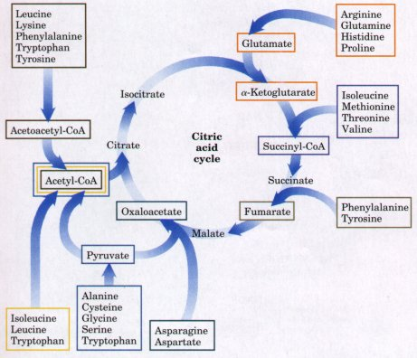
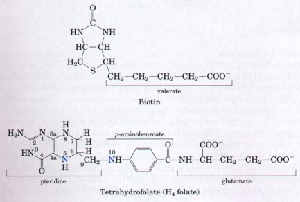
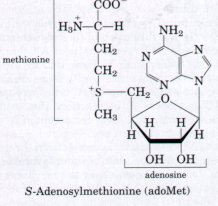
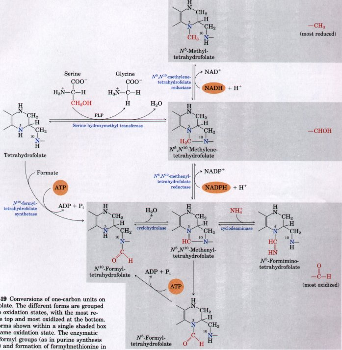
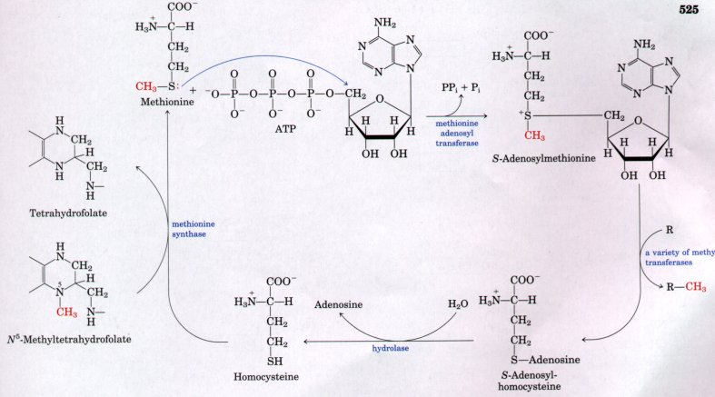
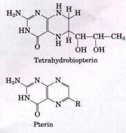
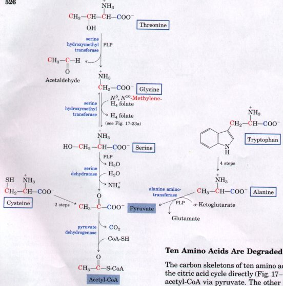
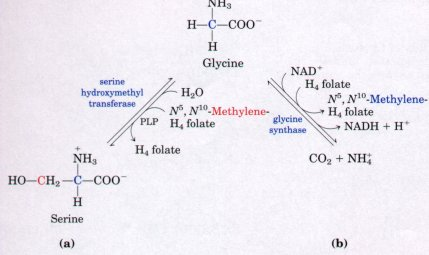
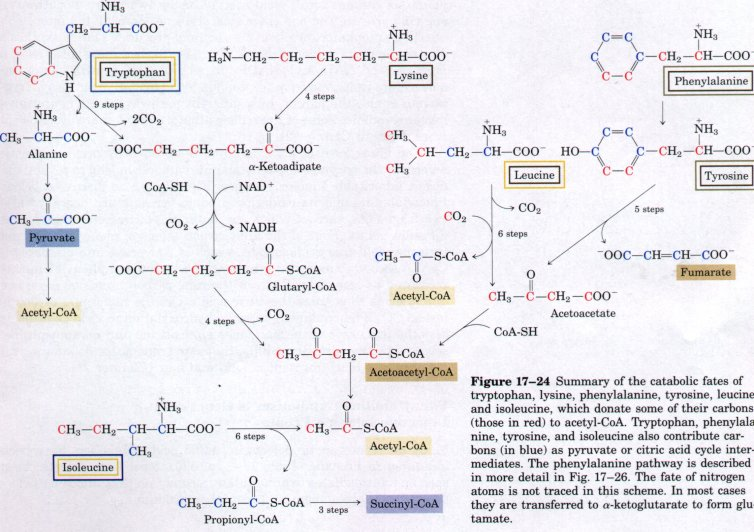
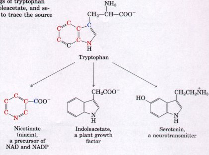

There are 20 standard amino acids in proteins, with a variety of carbon skeletons. Correspondingly, there are 20 different catabolic pathways for amino acid degradation. In humans, these pathways taken together normally account for only 10 to 15% of the body's energy production. Therefore, the individual amino acid degradative pathways are not nearly as active as glycolysis and fatty acid oxidation. In addition, the activity of the catabolic pathways can vary greatly from one amino acid to the next, depending upon the balance between requirements for biosynthetic processes and the amounts of a given amino acid available. For this reason, we shall not examine them all in detail. The 20 catabolic pathways converge to form only five products, all of which enter the citric acid cycle. From here the carbons can be diverted to gluconeogenesis or ketogenesis, or they can be completely oxidized to CO2 and H2O (Fig. 17-17).
 |
Figure 17-17 A summary of the points of entry of the standard amino acids into the citric acid cycle. (The boxes around the amino acids are colormatched to the end-products (shaded) of the catabolic pathways, here and in figures throughout the rest of this chapter.) Some amino acids are listed more than once; these are broken down to yield dif ferent fragments, each of which enters the citric acid cycle at a different point. This scheme represents the major catabolic pathways in vertebrate animals, but there are minor variations from organism to organism. Threonine, for instance, is degraded into acetyl-CoA via pyruvate in some organisms via a pathway illustrated in Fig. 17-22. |
All or part of the carbon skeletons of ten of the amino acids are ultimately broken down to yield acetyl-CoA. Five amino acids are converted into α-ketoglutarate, four into succinyl-CoA, two into fumarate, and two into oxaloacetate. The individual pathways for the 20 amino acids will be summarized by means of flow diagrams, each leading to a specific point of entry into the citric acid cycle. In these diagrams the amino acid carbon atoms that enter the citric acid cycle are shown in color. Note that some amino acids appear more than once, reflecting the fact that different parts of their carbon skeletons have different fates. Some of the enzymatic reactions in these pathways that are particularly noteworthy for their mechanisms or their medical significance will be singled out for special discussion.
A variety of interesting chemical rearrangements are found among the amino acid catabolic pathways. Before examining the pathways themselves, it is useful to note classes of reactions that recur and to introduce the enzymatic cofactors required. We have already considered one important class, the transamination reactions requiring pyridoxal phosphate. Another common type of reaction in amino acid catabolism is a one-carbon transfer. One-carbon transfers usually involve one of three cofactors: biotin, tetrahydrofolate, or S-adenosylmethionine (Fig. 17-18). These cofactors are used to transfer one-carbon groups in different oxidation states. The most oxidized state of carbon, CO2, is transferred by biotin (see Fig. 15-13). The remaining two cofactors are especially important in amino acid and nucleotide metabolism. Tetrahydrofolate is generally involved in transfers of one-carbon groups in the intermediate oxidation states, and S-adenosylmethionine in transfers of methyl groups, the most reduced state of carbon.
 |
 Figure 17-18 The structures of enzyme cofactors important in one-carbon transfer reactions. The nitrogen atoms to which one-carbon groups are attached in tetrahydrofolate are shown in blue. |
Tetrahydrofolate (H4 folate) consists of a substituted pteridine, p-aminobenzoate, and glutamate linked together as in Figure 17-18. This cofactor is synthesized in bacteria and its precursor, folate, is a vitamin for mammals. The one-carbon group, in any of three oxidation states, is bonded to N-5 or N-10 or to both (Fig. 17-19). The most reduced form of the cofactor carries a methyl group, a more oxidized form carries a methylene group, and the most oxidized forms carry a methenyl, formyl, or formimino group. The different forms of tetrahydrofolate are interconvertible and serve as donors of one-carbon units in a variety of biosynthetic reactions. The major source of one-carbon units for tetrahydrofolate is the carbon removed in the conversion of serine to glycine, producing N5,N10-methylenetetrahydrofolate (Fig. 17-19).

Fignre 17-19 Conversions of one-carbon units on tetrahydrofolate. The different forms are grouped according to oxidation states, with the most reduced at the top and most oxidized at the bottom. All of the forms shown within a single shaded box are at the same oxidation state. The enzymatic transfer of formyl groups (as in purine synthesis (Fig. 21-27) and formation of formylmethionine in prokaryotes (p. 917)) generally uses Nl0-formyltetrahydrofolate rather than N5-formyltetrahydrofolate. The latter species is significantly more stable, and hence is not as good a donor of formyl groups. Over time, the equilibria of the reactions that interconnect these species will favor formation of N5-formyltetrahydrofolate. The N5 species must be converted to N10-formyltetrahydrofolate in a reaction that requires ATP because of its unfavorable equilibrium. Little is known about the mechanism of this reaction. Note that N5-formiminotetrahydrofolate is derived from histidine in a pathway shown in Fig. 17-29.
Although tetrahydrofolate can carry a methyl group at N-5, the methyl group's transfer potential is insufficient for most biosynthetic reactions. S-Adenosylmethionine (adoMet) is more commonly used for methyl group transfers. It is synthesized from ATP and methionine by the action of methionine adenosyl transferase (Fig. 17-20). This reaction is unusual in that the nucleophilic sulfur atom of methionine attacks at the 5' carbon of the ribose moiety of ATP, releasing triphosphate, rather than attacking at one of the phosphorus atoms. The triphosphate is cleaved to Pi and PPi on the enzyme, and the PPi is later cleaved by inorganic pyrophosphatase, so that three bonds, two of which are high-energy bonds, are broken in this reaction. The only other reaction known in which triphosphate is displaced from ATP occurs in the synthesis of coenzyme B12 (see Box 16-2, Fig. 3).
S-Adenosylmethionine is a potent alkylating agent by virtue of its destabilizing sulfonium ion. The methyl group is subject to attack by nucleophiles and is about 1,000 times more reactive than the methyl group of N5-methyltetrahydrofolate.

Figure 17-20 Synthesis of methionine and S-adenosylmethionine as part of an activated methyl cycle. The methyl group donor in the methionine synthase reaction is methylcobalamin in some organisms. S-Adenosylmethionine, which has a positively charged sulfur (and is thus a sulfonium ion), is a powerful methylating agent in a number of biosynthetic reactions. The methyl group acceptor is designated R.
Transfer of a methyl group from S-adenosylmethionine to an acceptor yields S-adenosylhomocysteine, which is subsequently broken down to homocysteine and adenosine (Fig. 17-20). Methionine is regenerated by the transfer of a methyl group to homocysteine in a reaction catalyzed by methionine synthase. One form of this enzyme is common in bacteria and uses N5-methyltetrahydrofolate as a methyl donor. Another form that occurs in bacteria and mammals uses methylcobalamin derived from coenzyme B12. This reaction and the rearrangement of L-methylmalonyl-CoA to succinyl-CoA (Box 16-2, Fig. 1a) are the only coenzyme Bl2-dependent reactions known in mammals. Methionine is reconverted to S-adenosylmethionine to complete an activated methyl cycle (Fig. 17-20).
Tetrahydrobiopterin is another cofactor introduced in these pathways, but it is not involved in one-carbon transfers. Tetrahydrobiopterin is structurally related to the flavin coenzymes, and it participates in biological oxidation reactions. It belongs to a widespread class of biological compounds called pterins (Fig. 17-21), and we will consider its mode of action when we discuss phenylalanine degradation. |
 Figure 17-21 Tetrahydrobiopterin and its parent compound, pterin. Tetrahydrobiopterin is a cofactor for the enzyme phenylalanine hydroxylase. |
The carbon skeletons of ten amino acids yield acetyl-CoA, which enters the citric acid cycle directly (Fig. 17-17). Five of the ten are degraded to acetyl-CoA via pyruvate. The other five are converted into acetyl-CoA and/or acetoacetyl-CoA, which is then cleaved to form acetyl-CoA.
The five amino acids entering via pyruvate are alanine, glycine, serine, cysteine, and tryptophan (Fig. 17-22). In some organisms threonine is also degraded to form acetyl-CoA, as shown in Figure 17-22; in humans it is degraded to succinyl-CoA, as described later. Alanine yields pyruvate directly on transamination with a-ketoglutarate, and the side chain of tryptophan is cleaved to yield alanine and thus pyruvate. Cysteine is converted to pyruvate in two steps, one to remove the sulfur atom, the other a transamination. Serine is converted to pyruvate by serine dehydratase. Both the β-hydroxyl and the α-amino groups of serine are removed in this single PLP-dependent reaction (an analogous reaction with threonine is shown in Fig. 17-30). Glycine has two pathways. It can be converted into serine by enzymatic addition of a hydroxymethyl group (Fig. 17-23a). This reaction, catalyzed by serine hydroxymethyl transferase, requires the coenzymes tetrahydrofolate and pyridoxal phosphate. The second pathway for glycine, which predominates in animals, involves its oxidative cleavage into CO2, NH4+ , and a methylene group (-CH2-) (Fig. 1723b). This readily reversible reaction, catalyzed by glycine synthase, also requires tetrahydrofolate, which accepts the methylene group. In this oxidative cleavage pathway the two carbon atoms of glycine do not enter the citric acid cycle. One is lost as CO2, and the other becomes the methylene group of N5,N10- methylene- tetrahydrofolate (Fig. 17-19), which is used as a one-carbon group donor in certain biosynthetic pathways.
 |
Figure 17-22 Outline of the catabolic pathways for alanine, glycine, serine, cysteine, tryptophan, and threonine. The fate of the indole group of tryptophan is shown in Fig. 17-24. Details of the glycine-to-serine conversion, and a second fate for glycine, are shown in Fig. 17-23. In some organisms (including humans) threonine is degraded to succinyl-CoA by another pathway (Fig. 17-30). There are several pathways for cysteine degradation, all of which lead to pyruvate. The enzyme serine hydroxymethyl transferase contains both pyridoxal phosphate and tetrahydrofolate. The threonine cleavage reaction shown here is catalyzed by the same enzyme. Carbon atoms here and in subsequent figures are color-coded as necessary to trace their fates, in addition to the color-coding for pathways described in Fig. 17-17. |
Portions of the carbon skeleton of six amino acids-tryptophan, lysine, phenylalanine, tyrosine, leucine, and isoleucine-yield acetyl-CoA and/or acetoacetyl-CoA; the latter is then converted into acetyl-CoA (Fig. 17-24). Some of the final steps in the degradative pathways for leucine, lysine, and tryptophan resemble steps in the oxidation of fatty acids. The breakdown of two of these six amino acids deserves special mention.
 |
Figure 17-23 Two metabolic fates of glycine: (a) conversion to serine and (b) breakdown to CO2 and ammonia. The cofactor tetrahydrofolate carries one-carbon units in both of these reactions. The structure of H4 folate is shown in Fig. 17-18, and its role as a cofactor in one-carbon transfers in Fig. 17-19. |

Figure 17-24 Summary of the catabolic fates of tryptophan, lysine, phenylalanine, tyrosine, leucine, and isoleucine, which donate some of their carbons (those in red) to acetyl-CoA. Tryptophan, phenylalanine, tyrosine, and isoleucine also contribute carbons (in blue) as pyruvate or citric acid cycle intermediates. The phenylalanine pathway is described in more detail in Fig. 17-26. The fate of nitrogen atoms is not traced in this scheme. In most cases they are transferred to α-ketoglutarate to form glutamate.
The degradation of tryptophan is the most complex of all the pathways of amino acid catabolism in animal tissues; portions of tryptophan (six carbons total) yield acetyl-CoA by two different pathways, one via pyruvate and one via acetoacetyl-CoA. Some of the intermediates in tryptophan catabolism are required precursors for biosynthesis of other important biomolecules (Fig. 17-25), including nicotinate, a precursor of NAD and NADP. In plants, the growth factor indoleacetate is derived from tryptophan by an oxidative pathway. Tryptophan is also the parent, by a different pathway, of the neurotransmitter serotonin. Some of these biosynthetic pathways are described in more detail in Chapter 21.
 |
Figure 17-25 The aromatic rings of tryptophan are precursors of nicotinate, indoleacetate, and serotonin. Colored atoms are used to trace the source of the ring atoms in nicotinate. |
The breakdown of phenylalanine is noteworthy because genetic defects in the enzymes of phenylalanine catabolism lead to several dif ferent inheritable human diseases (Fig. 17-26), as discussed below. Phenylalanine and its oxidation product tyrosine are degraded into two fragments, each of which can enter the citric acid cycle, but at different points. Four of the nine carbon atoms of phenylalanine and tyrosine yield free acetoacetate, which is converted into acetoacetylCoA. A second four-carbon fragment of tyrosine and phenylalanine is recovered as fumarate. Eight of the nine carbon atoms of these two amino acids thus enter the citric acid cycle; the remaining carbon is lost as CO2. Phenylalanine, after its hydroxylation to yield tyrosine, is also the precursor of the hormones epinephrine and norepinephrine, secreted by the adrenal medulla, the neurotransmitter dopamine, and melanin, the black pigment of skin and hair (Chapter 21).